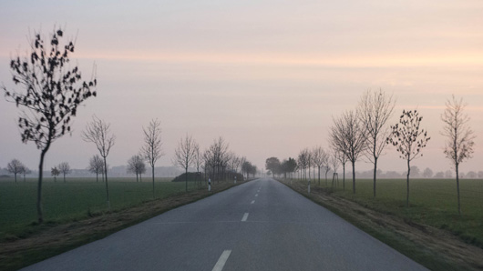
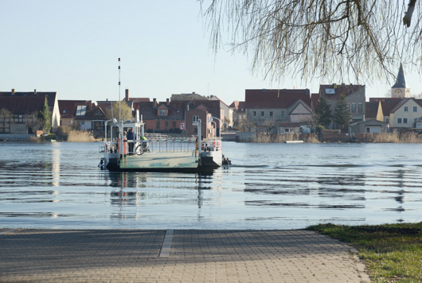

Fuchsbau - Zimmer für Freunde & Gäste
Dorfstr. 33
14715 Milower Land (OT Bahnitz)
Bitte geben Sie "Bahnitz" oder "Milower Land" in die Navi ein, da unter der Postleitzahl mehrmals die Dorfstr. zu finden ist!
Bahnitz liegt im Westhavelland zwischen Brandenburg a. d. Havel, Genthin und Rathenow. Westlich von Berlin und Potsdam.
Bitte in der Navigation Milower Land oder Bahnitz eingeben,
da es die Dorfstr. unter der Postleitzahl 14715 mehrmals gibt.
Anreise mit dem Auto Von Berlin Über die Autobahn
- A2 bis Brandenburg a. d. Havel
- in Brandenburg a. d. Havel folgen Sie der B1 (Richtung Genthin)
über Plaue und Neubensdorf
- hinter Neubensdorf rechts abbiegen (Richtung Premnitz und Rathenow) bis
Nitzahn
- in Nitzahn, am Nitzahner Eck erste nach rechts abbiegen (Richtung Möthlitz)
nun immer
der Straße folgen bis Bahnitz
- der Fuchsbau liegt im "Kreisel" rechter Hand
Alternative ab Brandenburg a. d. Havel (mit Fähre)
in Brandenburg a. d. Havel der B102 Richtung Rathenow folgen, über Fohrde
- direkt hinter Fohrde über die Schienen fahren und links einordnen um nach Pritzerbe abzubiegen
-
dort auf der Straße parallel zum Fluss bleiben und kurz hinter dem Tante Emma Laden links zur Fähre abbiegen und mit der Fähre nach Kützkow übersetzen
-
dort geradeaus bis rechts der Plattenweg (einspuriger Waldweg) nach Bahnitz abgeht. In Bahnitz am "Kreisel", liegt der Fuchsbau auf der linken Seite
Die Fähre fährt nach Bedarf. Pause von 12 - 12.30 Uhr / 18 - 18.30
MO-FR 4:50 - 22:30 / SA 7 - 0:30 / SO + Feiertag 7 - 22:30 (ab 1.5. - 30.9.) danach weniger lange
Von Berlin der Weg Über Land: (mit Fähre)
Fahren Sie die Heerstraße, dann über die B5 Richtung Nauen. Durch Nauen & Ribbeck, hinter Selbelang links Richtung Brandenburg a. d. Havel bis Marzahne, dort rechts Richtung Rathenow bis Pritzerbe. Die Fähre nach Kützkow nehmen und dort am Ortsende rechts über eine verwunschene Plattenweg-Allee die letzten 3 km nach Bahnitz.
Die Fähre fährt nach Bedarf. Pause von 7:30 - 8 / 12 - 12.30 Uhr / 18 - 18.30
MO-FR 4:50 - 22:30 / SA 7 - 0:30 / SO + Feiertag 7 - 22:30 (ab 1.5. - 30.9.) danach weniger lange

Fähre Pritzerbe - Kützkow
Anreise mit der Bahn
Von Berlin mit dem RE nach Brandenburg a. d. Havel, dort umsteigen in die ODEC Richtung Rathenow und in Pritzerbe aussteigen.
Über die Gleise Richtung Stadtzentrum immer geradeaus laufen bis Sie zur Fähre gelangen. Nach Kützkow übersetzen. Mit dem Fahrrad 15 Minuten über den Waldweg fahren oder 30 Min zur Fuß.
ANREISE MIT DEM FAHRRAD
Bahnitz liegt direkt am Havelradweg und am Tour Brandenburg Radweg.